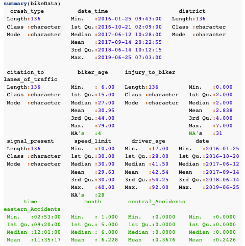
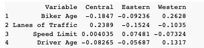
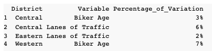
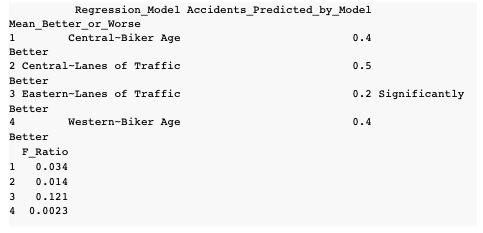
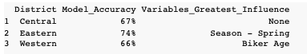

Overview
As a society, Americans are trying to develop a more active lifestyle for both the health benefits as well for the enjoyment that comes with getting outside. One of the most popular recreational activities in America is cycling. Cities are becoming more aware of the desire for bike trails and greenways, however, many major cities still lack an extensive trail system for bicyclists. If you would like to cover long distance on your cycling outing, you most likely will have to at some point share the road with vehicles. For a majority of reasons, this can be problematic, both for the bicyclists and the driver of the vehicle. Until sufficient bike lanes are created and greenway trail systems are matured, the road will have to be shared.
For my project, I will be attempting to identify the high volume locations of bike accidents in St. Paul Minnesota and identify what factors lead to an area being high risk for bike accidents in St. Paul. This analysis is important for multiple reasons. For starters, bikers can use this data to avoid specific areas when planning their bike routes in order to minimize their chances of getting in an accident with a vehicle. Also, when planning future streets/bike lanes/greenways, cities will be able to use this analysis to assist them in designing roads and locations that reduce bike accidents.
The Data
 Sample from the datatset I will be using to train my model.I will be using data collected by the St. Paul Police Department to determined what characteristics are related to areas of high bike and pedestrian crashes. There was a lot of data cleanup and manipulation I had to perform. As well as creating new fields, I had to convert data types, and remove any incorrect data.
In addition to the data provided by the dataset, I also had to create a couple new features I felt would be important to increase the accuracy of the model. The first column I had to create was the total fantasy points for that season. I used the standard head to head scoring system from CBS Sports to calculate these values (CBS Sports, n.d.). The next field I created was the rolling three year average of the player’s fantasy points. This gives a better snapshot of how the player typically produces compared to just the past season. I also created an overall total average fantasy points for the player. If the player had a one hit wonder season, these metrics will help the model to better understand and identify a regression candidate. Finally, I had to create a new column called Next_Year_FPTS as the dependent variable. It is the same scoring calculation as above for total fantasy points for the current season. However I had to look at the player’s stats from the next season to calculate this dependent variable that I am trying to predict with my test data.
Analysis
I used three models in an attempt to find the most accurate way to predict bike accidents in each of the three districts. Regression, Multiple Regression and Logistical Regression.
Linear Regression
The first approach I took to analyzing the data was using linear regression models to identify if there were any strong relationships between the data points and the amount of bike accidents in each district. Linear regression cannot be performed with categorical data points, so I had to create three new data sets for each district excluding the categorical values. Once the new data sets were created, I then used a confidence matrix to see what type of relationship each variable had to the amount of accidents in each district. Next I created three correlation matrices for each district to get a quick snapshot of which variables had the greatest impact on the relationship to bike accidents occurring.
The next table shows the correlation coefficients for between each variable and the amount of accidents per district. Every variable has a weak positive or negative correlation between the variable and the number of accidents in the district.
Based on my analysis, you cannot say that the Biker Age, Lanes of Traffic, Speed Limit or Driver Age are a direct cause of more bike accidents. However, what you can say is that there was a weak, sometimes positive, sometimes negative relationship depending on the variable(see the able above) between Biker Age, Lanes of Traffic, Speed Limit or Driver Age and the amount of bike accidents per district.
Regression Model
I then decided to run a few of the variables through a regression model to see what the model would say about the variables and their impact of the variation of bike accidents in St. Paul.
The below table highlights, in the first column of what the model for each variable predicted for the number of bike accidents. For bike lanes, I chose 4 and for biker age I chose 35. This is selfishly because I usually bike on 4 lane roads and am getting close to 35. The second column identifies whether if you had chose the the mean value of the number of accidents, would it have resulted in a significantly better or worse prediction. Based on the f Ratios and and R2 values, we would need to collect more data and additional data types to use these models when predicting the number of bike accidents by district in St. Paul, MN.
Multiple Regression Model
I tried to see if a Multiple Regression Model is something that can be used with this data in an attempt to identify high risk causes for accidents by district.
Based on the findings, I cannot say that this model, although better than the regression model, accurately predicts the number of bike accidents per district based on the low importance on the variables predicting the number of accidents per district. Not all the assumptions were met and we can not assume this model would not generalize to district’s bike accident volume.
Logistical Regression
The next model I am attempting to use to help predict the number of accidents per district is the Logistical Regression Model. I think this model will be more useful because I will be able to pull in additional categorical data points that I was not able to use in the Regression and Multiple Regression models above.
The table above identified that the model is 66% accurate and above for all three districts, with the Eastern District coming in at 74% accurate. This tells me that the Logistic Regression Model is a much better use case for this data set and predicting the number of bike accidents by district.
Conclusion
Based on the analysis of the data with three models - Regression, Multiple Regression and Logistical - I can say that the correct model for predicting bike accidents in St. Paul, MN is the Logistical model. The regression and multiple regression models could only account for 10% or less of the variability in bike accident volumes per district. This is not a good predictor and we would need to collect more quantitative data in order to strengthen those models.
The Logistical Regression model however did a much better job at predicting the volume of bike accidents for each district. The accuracy of over 66% was much higher than the regression and multiple regression models and I believe this is because of the additional categorical variables that were included in this model helped the model make a more accurate prediction versus only using numerical values.
66%, 67% and 74% accuracy rate for the three models are great numbers, but this model could always do better and get stronger if it were to be used in a real life setting. I think to increase this accuracy, we would need to collect more accurate data (data quality checking) and see if there are additional metrics we can add to the model that would help strengthen the models ability to predict the volume of bike accidents based on the variables input into the model.